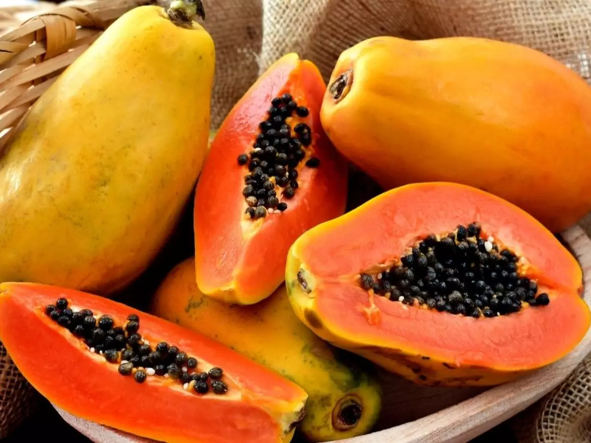

Localizado no coração de Xique-Xique, o Mercado Brugs é referência quando o assunto é variedade, qualidade e
bom atendimento.
Com um ambiente acolhedor e uma equipe sempre pronta para ajudar, o Brugs se destaca como o
ponto de encontro dos moradores da cidade e das comunidades vizinhas.
Seja para fazer as compras do mês, encontrar produtos fresquinhos da região ou aproveitar as promoções
imperdíveis, o Mercado Brugs é sempre a melhor escolha.
Frutas, verduras, carnes selecionadas, produtos de
limpeza, utilidades para o lar e muito mais – tudo reunido em um só lugar.
Além da excelência no atendimento, o Brugs também valoriza os produtores locais, fortalecendo a economia da região e oferecendo aos clientes produtos autênticos e de alta qualidade.
Quem é de Xique-Xique sabe: quando o assunto é confiança, economia e variedade, é no Mercado Brugs que a gente encontra tudo isso e muito mais. Venha conferir!
Frutas
Frutas de todos os tipos, desde as comuns até as exóticas!

Laticínios
Fonte de cálcio! Leite e derivados, Queijos, Iogurtes e muito mais!
Açougue
Aqui você encontra cortes até mesmo dos mais variados e exóticos animais!